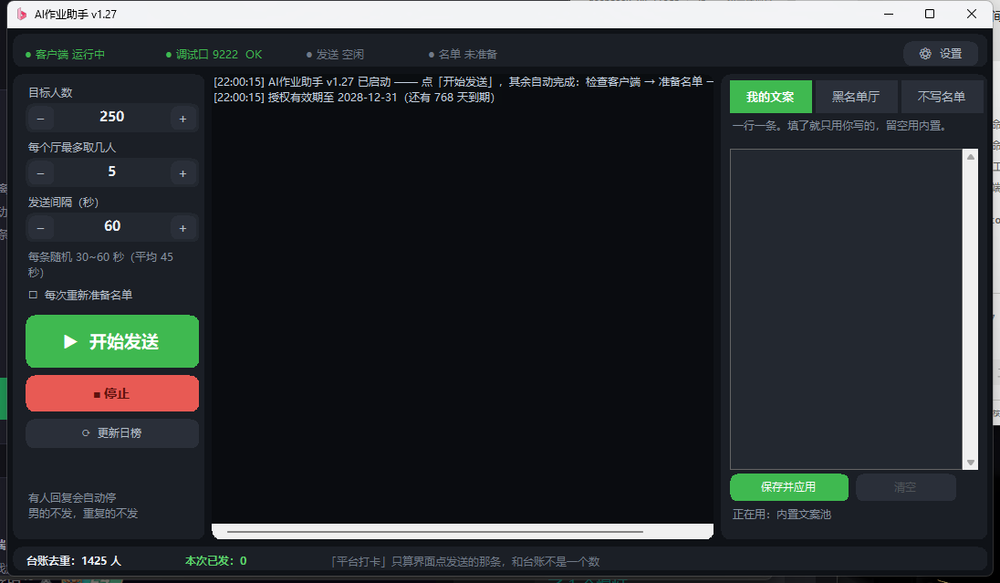

重大版本更新中 · 暂停下载 这一版正在做重大更新，下载通道暂时关闭。新版做完会在下载页和群里同时通知开放时间，本说明页也会一起更新。
作
AI作业助手 v1.27
批量给游客写作业私信 · 不用一条条手打
李太阳 ☀ 出品
一晚上发出去几百条私信，条条不重样。只发女生，男的不发、发过的不重复、黑名单厅整厅跳过。你只管在公屏上聊，作业它自己写。

主界面：左边设人数和间隔，右边写文案，中间看日志
怎么用
- 装好打开。第一次启动会自动重启开播助手，别自己去点开播助手，等它自己起来。
- 看顶部四个点，绿了就是好了：客户端 运行中、调试口 9222 OK。
- 左边填目标人数（想发多少条，默认 250）。发送间隔默认 60 秒，一般不用改。
- 点绿色的 ▶ 开始发送。后面它自己来：查客户端 → 准备名单 → 一个一个发。
- 有人在私信里回复，它会自动停下让你回去聊；想主动停就点 ■ 停止。
几个你会用到的
- 名单不用你准备，软件自己去日榜里捞，男的自动跳过。
- 底部台账去重是已经发过的人数，同一台电脑不会重复骚扰同一个人。
- 更新日榜 = 重新拉一次当前厅的游客榜，换厅以后点一下。
- 右边三栏：我的文案（一行一条）、黑名单厅、不写名单（这些 ID 永不发）。
- 文案空着就用内置文案池，填了就优先用你自己写的。
三个软件可以同时开
作业助手、自动爆灯、欢迎助手 互不冲突，可以一起运行。三个同时挂着也没问题，各干各的。
首次启动会重启你的开播助手
软件第一次运行会自动关掉开播助手，再带调试口重新打开。这期间不要手动去点开播助手，等它自己起来。
重启会断开当前直播，开播要重新点一次。
首次启动慢是正常的
第一次要连调试口、初始化组件，等 10~30 秒都属于正常。别以为卡死了去反复开关，第二次以后就快了。
免责声明：本软件仅供个人娱乐、学习交流使用，禁止任何商业用途、禁止转卖倒卖。
使用前请自行了解并遵守所在平台规则，因使用本软件产生的任何后果由使用者自行承担。
李太阳 ☀ · 语音厅工具站